Warlords III: Era de Alianzas — Manual de uso. Borrador de trabajo, edición del 27/10/2026.
Documento interno del clan. No está pensado para su distribución: describe el estado del parche a la fecha de la edición, incluidas funciones que todavía están en período de prueba. Las secciones marcadas como en prueba o en desarrollo pueden cambiar en las próximas versiones.
Warlords III: Darklords Rising es una obra de Strategic Studies Group (1997). Este parche no reemplaza el juego original: lo complementa con un ejecutable propio. Todas las marcas pertenecen a sus dueños.
Convenciones: los nombres que aparecen en pantalla en inglés se escriben tal cual (Allied View,
Build Trap); las teclas, como Q; las rutas de archivos, como C:\Warlords3\DATA.
Durante años, las alianzas de Warlords III fueron un acuerdo de palabra: dos bandos que no se atacaban y nada más. Era de Alianzas convierte la alianza en una forma de jugar: se comparte lo que se ve, se comparten ciudades, se derriban puentes para cortar al enemigo y el mapa esconde peligros que el equipo tiene que descubrir junto.
Era de Alianzas (internamente, el parche vista-aliada) es una modificación de Warlords III:
Darklords Rising desarrollada para las partidas del clan. Se instala con el Actualizador (capítulo II) y se
juega abriendo DarklordAV.exe, un ejecutable nuevo que vive junto al original. El título del juego pasa a
ser «Warlords III Era de Alianzas», con su propio logotipo en el menú principal.
Darklord.exe y DATA\War3.RES solo se leen; el
parche crea archivos nuevos (DarklordAV.exe, DATA\WAR3AV.RES y los del Apéndice B).
Quien quiera jugar sin el parche abre el ejecutable de siempre.DarklordAV.exe de la misma versión del parche.| Novedad | En pocas palabras | Cap. |
|---|---|---|
| Vista aliada compartida | Los aliados mutuos ven el mapa que explora cada uno, también con niebla. | IV |
| Ciudades compartidas | Las tropas aliadas entran y se refugian en las ciudades del socio; banderas de los socios en las torres. | IV |
| Landing, Carrier, Cabotage | Barcos que desembarcan en cualquier costa, convoyes de hasta 24 unidades y barcos costeros que cruzan ríos. | V |
| Puentes | Derribarlos, reconstruirlos, pelear sobre ellos con el bono Bridge y misiones de héroe para volarlos. | VI |
| Pozos, remolinos y trampas | Peligros ocultos que matan a quien los pisa; trampas y minas submarinas que construye el jugador. | VII |
| Día y noche | Una vuelta de día y otra de noche: oscuridad con halos de luz, tropas camufladas y monstruos más fuertes de noche. | VIII |
| Reglas del clan en el Army List | El juego marca las unidades que el DarklordsValidator rechazaría. | IX |
| Pilas con voladores | Una pila con algún volador admite como máximo 6 ejércitos. | IX |
| Órdenes por chat | Escribir .n ataca CIUDAD a un aliado manejado por la computadora. | X |
| Votación, Sorteo, Comparador | Botones dentro del juego que abren las herramientas del clan en todas las PC. | III, XI |
| Ítems en mapas al azar | Los ítems personalizados entran en el sorteo de las ruinas. | XII |
| IA mejorada | La computadora usa barcos, puentes, refugios aliados y esquiva los pozos que ve. | XIII |
Un solo programa mantiene al día la carpeta del juego: baja ejércitos, hechizos, héroes, escenarios, ítems, el juego completo, los parches y las herramientas del clan.
C:\Warlords3 (la versión de GOG corre en ventana, lo que permite
que las herramientas del clan se abran encima del juego).Actualizador-v.<versión>.exe, publicado en la sección de lanzamientos del repositorio
Warlords-updater (lanzamiento «Ejecutable»).El Actualizador tiene aspecto de terminal. Muestra un menú numerado; se escribe el número de la opción y
Enter. Se pueden pedir varias a la vez separándolas con espacios (por ejemplo 1 2 3), salvo la 6,
que va sola.
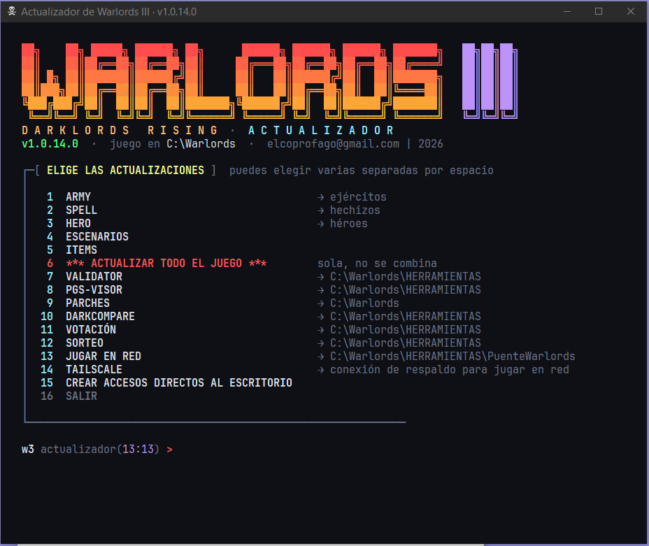
| N.º | Opción | Qué hace |
|---|---|---|
| 1 | ARMY | Baja los ejércitos (ARMY). |
| 2 | SPELL | Baja los hechizos. |
| 3 | HERO | Baja los héroes. |
| 4 | ESCENARIOS | Baja los escenarios. |
| 5 | ITEMS | Baja los ítems. |
| 6 | ACTUALIZAR TODO EL JUEGO | Instala el juego completo sobre C:\Warlords3. No pisa lo propio de cada PC (configuración, partidas, herramientas). Va sola. |
| 7 | VALIDATOR | DarklordsValidator, el validador de unidades del clan. |
| 8 | PGS-VISOR | EditorPGS, visor de bandos (.PGS). |
| 9 | PARCHES | Lista los parches disponibles (Era de Alianzas y el paquete de herramientas) e instala el elegido. El paquete de herramientas instala la carpeta C:\Warlords3\HERRAMIENTAS si no está, o la actualiza si ya está. |
| 10 | DARKCOMPARE | Comparador de armas. |
| 11 | VOTACIÓN | Programa de votación de la partida. |
| 12 | SORTEO | Sorteo del orden de elección de posiciones. |
| 13 | JUGAR EN RED | Instala o actualiza Puente Warlords y lo abre. |
| 14 | TAILSCALE | Conexión de respaldo para jugar en red. |
| 15 | CREAR ACCESOS DIRECTOS | Pone en el escritorio los accesos a las herramientas instaladas. |
| 16 | SALIR |
Antes de instalar un parche, el Actualizador verifica el paquete bajado. Cada parche lleva su número de versión;
la PC recuerda cuál tiene instalada en C:\Warlords3\PARCHES.
Las opciones 7, 8, 10, 11 y 12 dejan cada programa en C:\Warlords3\HERRAMIENTAS. Al actualizar no
se pisan los archivos .ini que ya estén: la configuración de cada PC se conserva. Votación y Sorteo son
los programas que abren los botones del juego (capítulos III y XI).
Opción 13. Deja Puente Warlords en HERRAMIENTAS\PuenteWarlords y lo abre. Si ya está instalado,
solo baja una versión nueva cuando la hay.
Opción 14. Es la conexión de respaldo del Puente. Si falta, instala Tailscale y abre en el navegador el inicio de sesión; después pide el enlace con el que el dueño del servidor comparte su PC y espera a que el servidor responda. Requiere haber instalado antes el Puente (opción 13).
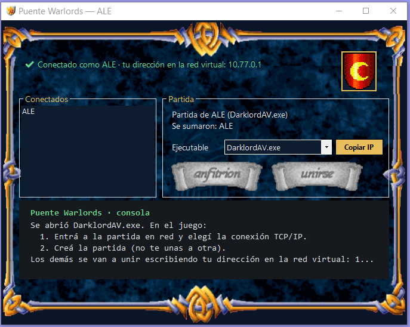
Abrir C:\Warlords3\DarklordAV.exe. El menú principal muestra el logotipo de Era de Alianzas; el resto
de los menús es el del juego original.
En Customize Options aparecen tres casillas nuevas:
| Casilla | Efecto | Requiere |
|---|---|---|
| Allied View | Vista aliada compartida: los aliados mutuos comparten lo explorado (capítulo IV). | Diplomacy activada. Tiene efecto con Hidden Map. |
| Shared Cities | Ciudades compartidas entre aliados (capítulo IV). | Diplomacy activada. |
| Day/Night | Una vuelta de día y otra de noche (capítulo VIII). | Nada. Se puede combinar con Hidden Map. |
Las tres aparecen también en el informe View Game Options («Shared Allied View», «Shared Cities» y «Day/Night») para que todos los jugadores sepan con qué reglas se juega. Viajan con la partida guardada y por red.
Los pozos y remolinos (capítulo VII) aparecen solo si la partida tiene activada la opción del juego Hidden Ruins.
En la pantalla de preparación, junto al botón Chat, hay un botón con el ícono del Sorteo. Lo usa el anfitrión: al pulsarlo, el programa Sorteo se abre en todas las PC de la partida. Sortea el orden en que cada color elige su posición (una ciudad con mapa visible, un cuadrante con mapa oculto). El anfitrión lo opera; los demás lo ven como espectadores, con sus bandos marcados. Requiere que cada PC tenga instalado el paquete de herramientas (Actualizador, opción 9 o 12); si falta, el juego lo avisa.
En Edit Side, arriba a la izquierda junto a Armies, un botón con el ícono de DarkCompare abre el comparador de armas sobre los ejércitos de la carpeta del juego. Es local: cada jugador lo abre en su PC, en cualquier momento, y no afecta a los demás. Si ya está abierto, trae su ventana al frente.
Un aliado es otro par de ojos y otra muralla. Todo lo de este capítulo vale solo entre aliados mutuos: los dos bandos tienen que haberse declarado aliados en la diplomacia del juego.
Con Allied View y Hidden Map, cada casilla que explora un bando la ven también sus aliados mutuos. Si la alianza se rompe, cada uno conserva solo lo que exploró por sí mismo: lo que le prestó el ex aliado vuelve a quedar oculto.
Con Fog of War activada, la niebla se despeja alrededor de las ciudades y los ejércitos propios y de los aliados mutuos. Los ejércitos invisibles siguen viéndose solo por su dueño, aliado o no.
Con Shared Cities, una ciudad pasa a ser compartida con los aliados mutuos de su dueño. En mapa oculto, solo la comparten los aliados que la exploraron con sus propios ejércitos; con el mapa visible, todos.
Cuando solo quedan con vida bandos aliados entre sí, el juego muestra el cartel «An allied victory!».
En el juego original, todo desembarco pasa por un puerto. Era de Alianzas agrega tres bonos de movimiento para el barco de cada bando, que cambian por completo la guerra naval.
Cada bando tiene un único tipo de barco (la última ranura de su lista de ejércitos). Los bonos se le ponen al barco en el editor de ejércitos, en cualquiera de sus cuatro casilleros de Move Bonus, y desde ese momento rigen para todo el bando. El Army List los muestra entre las habilidades de la unidad.
En el original, un puerto arrasado seguía sirviendo para embarcar. Ahora no: hay que reconstruirlo para volver a usarlo.
| Bonos del barco | Ejércitos por barco | Movimiento máximo | Desembarca |
|---|---|---|---|
| Ninguno (original) | Tope del bando | El del barco | Solo en puertos |
| Landing | 5 | 12 | Cualquier costa |
| Landing + Carrier | 6 (convoy de hasta 3 barcos) | 20 | Costa; en convoy, solo puertos |
| Carrier | Tope del bando (convoy de hasta 3) | 24 | Solo en puertos |
| Cabotage | Tope del bando | El del barco | Solo en puertos; no se aleja de la costa |
Un puente es un paso obligado. Ahora también es un objetivo.
Al pie de un puente derribado, la orden Build lo reconstruye al costo de fundar una ciudad (con el descuento del jugador, como los sitios). El puente tiene que estar vacío.
Una unidad con la habilidad especial Bridge +N suma N a su fuerza cuando la batalla es sobre un puente en pie, ataque o defienda. No vale en puentes derribados ni para héroes. Se asigna en el editor como cualquier habilidad.
Al pedir misión (Get Quest, tecla Q) en dificultad Average, entre los objetivos posibles aparece derribar un puente enemigo o sin dueño, a la misma distancia que los sitios. Se cumple al derribarlo con el héroe y se premia como «Destroying an Enemy Site». Fracasa si otro lo derriba antes. La IA también recibe y cumple estas misiones.
«Your army fell into the Well of Souls!» — Bajo el mapa hay abismos que nadie dibujó. Quien no explora con cuidado los encuentra de la peor manera.
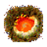
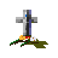
Con la opción Hidden Ruins, el mapa reparte al empezar, en secreto:
La cantidad de cada uno es el 20 % de las ruinas del mapa (mínimo uno). Cada uno tiene nombre propio (por ejemplo Well of Souls o Maelstrom of Kor). Al empezar, cada jugador ya conoce los que hay en la región de su capital.
Con Discover Ruins, un grupo descubre un pozo o remolino al pasar a una casilla de él. Una vez descubierto, queda dibujado para ese jugador el resto de la partida. Pasando el mouse por encima aparece la lupa; con el botón derecho se abre un cuadro con el nombre y el tipo.
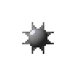
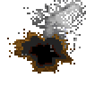
Las unidades con el bono de combate Trap (se asigna en el editor, por ejemplo a los zappers) pueden sembrar trampas:
en prueba En dificultad Hard, si el héroe conoce una trampa enemiga cercana, puede salir la misión «Escort trap-disarming team to Afland02». Se cumple haciéndola explotar con un ejército propio y llevando al héroe, por tierra y sin volar, a una casilla o menos de ella. Fracasa si la trampa se gasta sin que la haya detonado el jugador. Solo la reciben jugadores humanos.
Una vuelta de día y otra de noche: de noche se ve menos, algunas tropas se esconden y los monstruos se vuelven más fuertes.
En Customize Options, columna Viewing Options, marcar Day/Night. Se puede combinar con Hidden Map. El informe View Game Options muestra «Day/Night» para que todos sepan con qué reglas se juega. Las vueltas impares son de día y las pares de noche.
De noche, un grupo cuyas unidades tienen todas el Move Bonus camouflg se dibuja como una figura tenue en gris verdoso, del tono del pasto, que se confunde con el terreno (globito del color del equipo incluido). En el Army Report de noche, esos grupos no les aparecen a los demás; sí a su dueño y a los aliados con vista aliada.
De noche, toda unidad cuyo tipo tenga la clase monster, demon o undead (en Edit Army Data, sus Army Subtypes) gana +2 en una sola cosa, sorteada: fuerza, hits, su bono de combate (si tiene uno) o su habilidad especial (si ya tiene una; por ejemplo, trample 1 pasa a trample 3). Hay un sorteo por noche, que vale en todos los combates de esa noche. No hay que asignar nada en el editor. Los héroes no lo reciben.
Una pila que incluya al menos un volador (unidad voladora o héroe que vuela, por sí o por un objeto) admite como máximo 6 ejércitos. Las pilas de más de 6 de partidas viejas no se parten: solo no pueden crecer.
| Bono | Dónde se pone | Efecto |
|---|---|---|
| Landing | Move Bonus del barco | Desembarco libre (cap. V) |
| Carrier | Move Bonus del barco | Convoyes (cap. V) |
| Cabotage | Move Bonus del barco | Navegación costera (cap. V) |
| Trap | Combat Bonus | Construir trampas (cap. VII) |
| Camouflg | Move Bonus | Camuflaje de noche (cap. VIII) |
| Bridge +N | Habilidad especial | +N de fuerza sobre puentes en pie (cap. VI) |
El Army List del juego marca las unidades que DarklordsValidator rechazaría según el manifiesto del clan. La coincidencia con el validador se comprobó sobre los 374 ejércitos de la carpeta del juego, con cero diferencias.
Definiciones: volador, la unidad con «fly» en algún casillero de Move Bonus; barco (ship), la unidad de agua; terrestre, la que no es ninguna de las dos.
| N.º | Regla |
|---|---|
| 1 | Ningún terrestre puede tener movimiento mayor a 25. |
| 2 | Ningún terrestre con Power «trample» puede tener movimiento mayor a 15. |
| 3 | Ningún terrestre con Power «Siege» mayor a 2 puede tener movimiento mayor a 17. |
| 4 | Ningún volador puede tener movimiento mayor a 40. |
| 5 | Ningún volador con Power «trample» puede tener movimiento mayor a 20. |
| 6 | Ningún volador con Power «Siege» mayor a 2 puede tener movimiento mayor a 22. |
| 7 | Ningún barco puede tener movimiento mayor a 30. |
| 8 | Ningún barco con Move Bonus «landing» puede tener movimiento mayor a 12. |
| 9–11 | Voladores: con Strength > 3 o Hits > 1, costo mínimo 600, upkeep 10, 3 turnos; con Strength > 6 o Hits > 2, 800, 15, 4 turnos; con Strength > 8 o Hits > 3, 1000, 20, 5 turnos. |
| 12–14 | Terrestres: con Strength > 3 o Hits > 1, costo mínimo 300, upkeep 5, 2 turnos; con Strength > 6 o Hits > 2, 400, 10, 3 turnos; con Strength > 8 o Hits > 3, 500, 15, 4 turnos. |
| 15–17 | Voladores con Power o Combat Bonus: Cost ≥ 600 y Upkeep ≥ 10; con Power y Combat Bonus: 800 y 15; con Power mayor a 4: 1000 y 20. |
| 18–20 | Terrestres con Power o Combat Bonus: Cost ≥ 150 y Upkeep ≥ 4; con ambos: 300 y 8; con Power mayor a 4: 500 y 12. |
| 21–23 | Barcos con Power o Combat Bonus: Cost ≥ 400 y Upkeep ≥ 8; con ambos: 600 y 12; con Power mayor a 4: 800 y 18. |
| 24 | Ningún barco con Move Bonus «landing» puede tener Cost menor de 1000 ni Upkeep menor a 17. |
| 25 | Ningún barco con Move Bonus «carrier» puede tener Cost menor de 1200 ni Upkeep menor a 34. |
El parche instala war3ed_av.exe, una versión del editor del juego cuyas listas desplegables ya ofrecen
los bonos nuevos (landing, carrier, cabotage, trap, camouflg) y la habilidad Bridge, sin tener que
escribirlos a mano.
Un aliado manejado por la computadora ya no es un mueble: se le pueden dar órdenes.
En la barra de chat del juego, un jugador humano escribe a un aliado de la computadora con el número de su bando
precedido de un punto (.n, de 1 a 8; se escribe con la tecla .):
| Escribir | Qué hace el aliado |
|---|---|
.3 ataca Afland | Ataca la ciudad con ese nombre exacto. |
.3 ataca a 5 o .3 ataca a NOMBRE | Ataca la ciudad más a mano del bando indicado (número o nombre). |
.3 mandame refuerzos | Manda tropas a la ciudad más a mano de quien da la orden. |
En el menú de la partida hay una línea nueva, Votacion. La usa el anfitrión: el programa Votación se abre en todas las PC, el anfitrión como operador y los demás como espectadores.
Al cerrar o reiniciar una votación con al menos un voto, el resultado (SÍ y NO, con el escudo del bando que la abrió) queda en el Events Report de la ronda y se guarda con la partida.
En el original, los mapas al azar solo repartían en las ruinas ítems del juego original, de cuatro listas fijas.
Desde la versión 1.0.67.0 el parche sortea, sin repetir, entre todos los ítems de la carpeta
ITEMS, incluidos los personalizados del clan. en prueba
Cómo reparte el juego los premios de las ruinas (sin cambios): el tipo de premio sale en partes iguales entre los permitidos para esa ruina; si es un ítem, en partes iguales entre los que quedan libres, y cada ítem sale una sola vez por partida.
La IA de Warlords III es código de 1997, sin redes neuronales: cada mejora es un cambio al programa que se mide con partidas reales en el banco de simulación (capítulo XIV).
DATA\IA.INI, la computadora juega con la IA de
siempre más las mejoras de barcos, puentes y pozos.Para saber si un cambio mejora a la IA no alcanza con mirar una partida: hay que jugar decenas, sin nadie delante, y comparar.
El banco juega tandas de partidas de computadora contra computadora. En cada partida algunos colores juegan con la IA de prueba (con la mejora en estudio) y otros con la original; en la partida siguiente se invierten. Así cada color juega con cada IA la misma cantidad de veces y la ventaja de una posición no ensucia el resultado (comparación A/B).
C:\Warlords3\DATA\IA.INI, sección [IA], claves Color0 a Color7
con valor original o prueba. Sin ese archivo el juego no lee ni escribe nada distinto. Con
él, el juego anota por turno y bando oro, ciudades, ejércitos y héroes (IA.CSV), las batallas, la
diplomacia, los eventos (puentes, convoyes, refugios, órdenes) y el podio final.
Las tandas se manejan desde el Monitor de IA (abajo) o desde la línea de comandos:
python ia\tanda.py nueva --partidas 6 --guardadas Tanda_Scarpart,Tanda_Borderlands
python ia\tanda.py seguir — retoma la última tanda sin terminar.
Cada partida arranca desde una partida guardada, se juega sola y termina con el Game Over, con la victoria
aliada o al llegar al tope de turnos. Si se cuelga (sin turnos nuevos durante varios minutos) se anota como colgada y la
tanda sigue. Todo queda en la base ia\datos.db.
python ia\sin_ruinas.py <guardada> arma una copia de la
partida con todas las ruinas exploradas y vacías: ningún héroe saca ítems, aliados ni oro, y las diferencias entre IA se
ven con menos partidas.ia\Monitor-IA.exe es el panel de control de las tandas. Arranca y corta tandas, muestra en vivo la
partida en curso (turno, bandos, eventos), el consumo de la PC, avisa de un posible cuelgue, permite silenciar el
juego y suspender la PC al terminar. Puede mostrar el juego en un monitor secundario (tanda.ini,
[Pantalla] preferida).
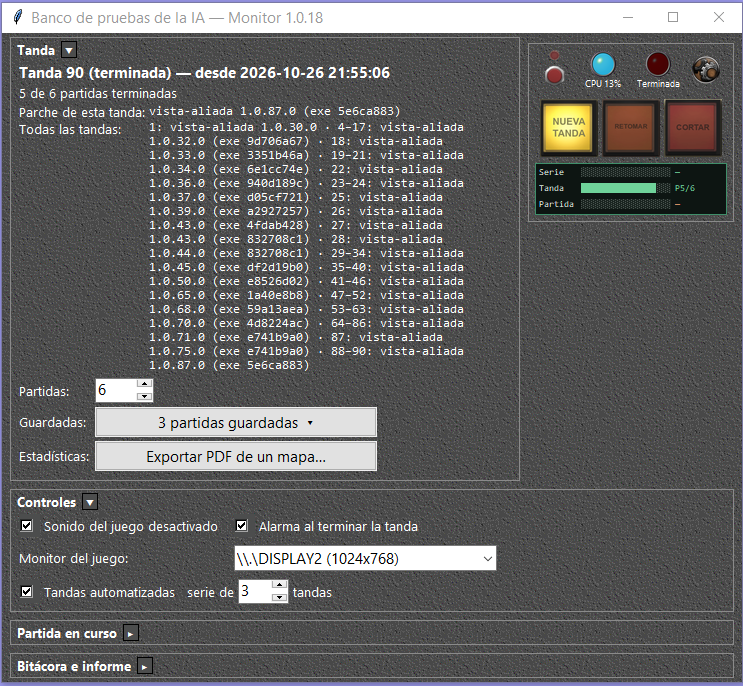
python ia\informe.py [tanda] — resultados por IA: puntos de victoria, ciudades, oro, partidas ganadas,
ataques desangrantes y, para las alianzas, refugios, defensas y qué equipo ganó.Alrededor del juego, el clan usa cinco programas propios. Todos se instalan con el Actualizador en
C:\Warlords3\HERRAMIENTAS y, al actualizarse, conservan la configuración de cada PC.
| Programa | Opción | Para qué sirve |
|---|---|---|
| DarkValidator | 7 | Valida unidades contra el reglamento del clan. |
| Visor PGS | 8 | Muestra un bando completo («foto») con puntos, Factor y validación. |
| DarkCompare | 10 | Compara armas entre sí. |
| Votación | 11 (o 9, parches) | Votaciones durante la partida. |
| Sorteo | 12 (o 9, parches) | Sorteo del orden en que cada color elige su posición antes de la partida. |
.arm de C:\Warlords3\ARMY) y dice si cumple el manifiesto del clan;
si no, indica qué regla incumple, con el número del manifiesto.ValidatorSetup.exe (opción 7 del Actualizador).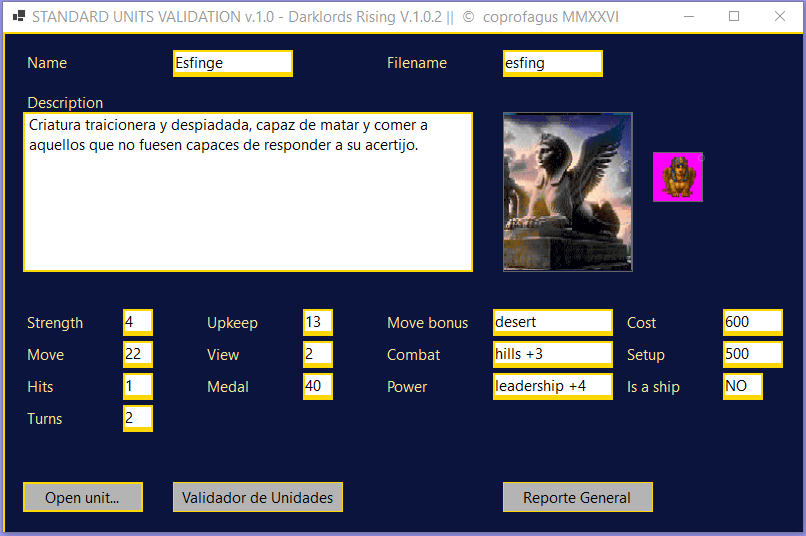
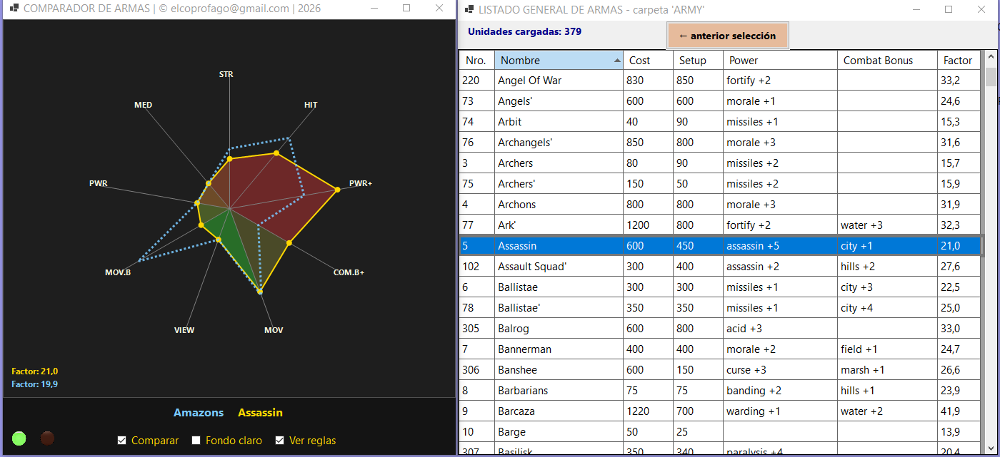
.PGS de la carpeta PGS). Solo lee: no modifica los archivos del juego.Default.rul; Factor por arma y total.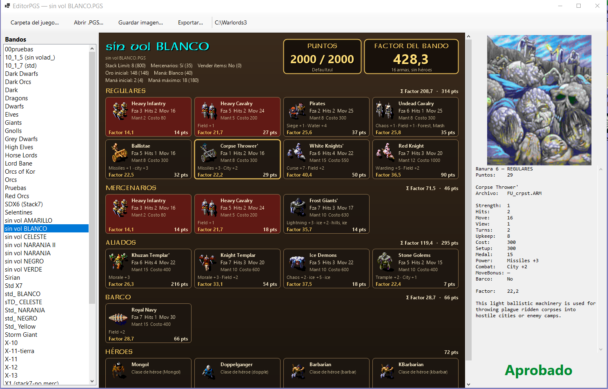
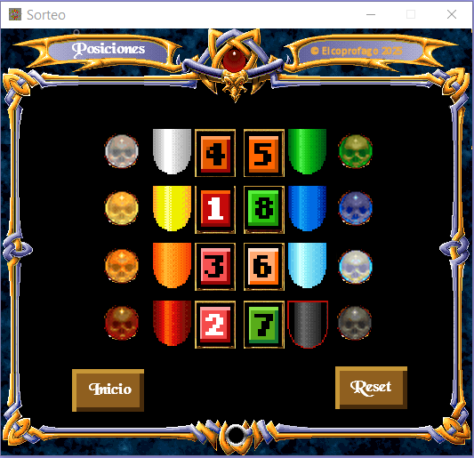
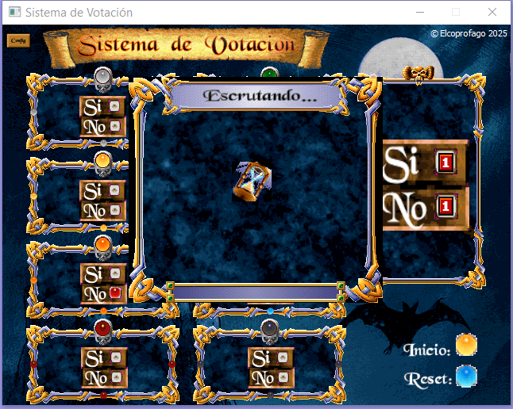
| Quiero… | Cómo |
|---|---|
| Jugar con el parche | Abrir C:\Warlords3\DarklordAV.exe |
| Instalar o actualizar el parche | Actualizador: opción 6 (una vez por PC), después 9 |
| Compartir la vista con aliados | Customize Options → Allied View (con Diplomacy y Hidden Map) |
| Compartir ciudades | Customize Options → Shared Cities (con Diplomacy) |
| Pozos y remolinos en el mapa | Activar Hidden Ruins; para descubrirlos, Discover Ruins |
| Derribar un puente | Grupo al lado del puente → menú de órdenes → arrasar |
| Reconstruir un puente | Grupo al pie del puente derribado → Build |
| Sembrar una trampa | Grupo con bono Trap en la casilla → menú de órdenes → Build Trap |
| Ver un pozo o trampa | Mouse encima (lupa) y botón derecho |
| Ordenar a un aliado de la IA | Chat: #n ataca CIUDAD, #n ataca a BANDO, #n mandame refuerzos |
| Votar | Anfitrión: menú de partida → Votacion |
| Sortear bandos | Anfitrión: botón Sorteo junto a Chat, en la preparación |
| Comparar armas | Edit Side → botón DarkCompare |
| Jugar con día y noche | Customize Options → Day/Night |
| Camuflar tropas de noche | Editor: Move Bonus camouflg en todas las unidades del grupo |
| Pedir misión | Q (Get Quest) |
Todos dentro de C:\Warlords3. Ninguno reemplaza un archivo del juego original.
| Archivo | Para qué |
|---|---|
DarklordAV.exe | El juego con el parche |
war3ed_av.exe | El editor con los bonos nuevos |
DATA\WAR3AV.RES | Diálogos, textos, sonidos y dibujos del parche |
DATA\BRIDNAME.TXT | Nombres de los puentes |
TERRAIN\SUBTYPE\landing.STT, carrier.STT, cabotage.STT, trap.STT, camouflg.STT | Los bonos nuevos, para el editor |
SETS\Fantasy\sorteo.pcx, darkcomp.pcx | Botones de Sorteo y Comparador |
PICTS\startav.pcx, startav1.pcx, startav2.pcx | Menú principal con el logotipo, en tres resoluciones |
RUINS\pozos.pcx | Dibujos de pozos, remolinos, trampas y tumbas |
Manual-Era-de-Alianzas.pdf | Este manual |
FX\Burst.wav | Explosión de una trampa |
RANDOM\Grass\ITEM.DAT, Item0-2.dat | Listas de ítems de los mapas al azar |
El paquete herramientas instala Herramientas\votacion.exe y Herramientas\sorteo.exe
(unos 100 MB).
Al 27/10/2026. probado = verificado en el juego; en prueba = funciona en las pruebas automáticas y falta confirmarlo jugando o con más partidas; en desarrollo = incompleto.
| Función | Estado |
|---|---|
| Vista aliada, niebla y ciudades compartidas | probado |
| Landing, Carrier, Cabotage | probado |
| Puentes: derribar, reconstruir, misión | probado |
| Habilidad Bridge +N | probado |
| Pozos, remolinos, trampas, lupa | probado |
| Trampas: daño del 40 al 80 % y parálisis | probado |
| Día y noche, minimapa de noche, con Hidden Map | probado |
| Camuflaje (camouflg) | probado |
| Monstruos, demonios y no muertos de noche | probado |
| Misión de escolta de la trampa | en prueba |
| Ítems personalizados en mapas al azar | en prueba |
| Army List con las 25 reglas | probado |
| Órdenes por chat a la IA | probado |
| Votación, Sorteo y pausa | en prueba en otras PC del clan |
| IA de alianzas | en prueba (series A/B) |
| Pozos y trampas en red (misma tabla en todas las PC) | en desarrollo |
| Opción 9 exige la 6 (Actualizador 1.0.13.0) | en prueba |
Aliado mutuo. Bando que se declaró aliado de otro y recibió la misma declaración.
Anfitrión. La PC que crea la partida en red (máquina 0). Opera la Votación y el Sorteo.
Camuflaje. Grupo que de noche se confunde con el terreno: todas sus unidades tienen el bono camouflg.
Convoy. Hasta tres barcos con Carrier, en casillas vecinas, que se mueven y defienden como uno.
Ciudad compartida. Ciudad de un bando que sus aliados mutuos pueden usar como propia para entrar y defender.
IA de prueba. La IA con las mejoras en estudio, activada por color en DATA\IA.INI.
Mina submarina. Trampa construida en el agua.
Pila. Grupo de ejércitos en una casilla (stack).
Pozo. Peligro oculto en tierra que mata a los ejércitos no voladores.
Remolino. Peligro oculto en mar abierto que hunde barcos.
Tanda. Serie de partidas IA contra IA del banco de simulación.
Trampa. Peligro que siembra un jugador con una unidad de bono Trap; explota dos veces.
Halo. Zona iluminada alrededor de una ciudad, ruina, sitio, puente o ejército propio, de noche.
Vista aliada. Mapa explorado compartido entre aliados mutuos.